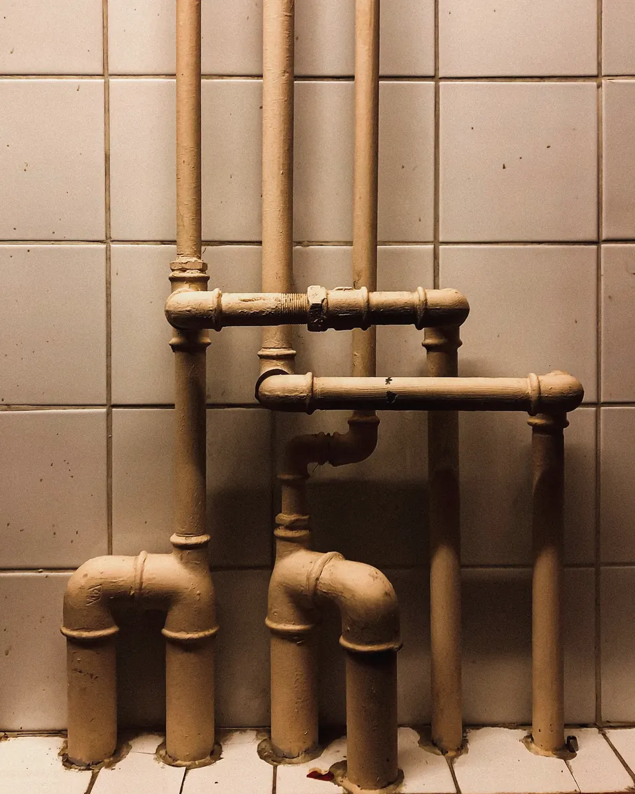

Putkiremontti, jossa asukas tietää.
Hankesuunnittelusta vastaanottoon. Jokaisella rapulla on oma kortti, jokaisella päivällä oma merkintä.
| Menetelmä | €/asm² | Kesto | Asukkaalle | Käyttöikä |
|---|---|---|---|---|
| Perinteinen linjasaneerausKaikki putket ja kylpyhuoneet uusiksi | 850–1 050 € | 12–14 viikkoa | Asuminen ei onnistu | 50 vuotta |
| HybridiViemärit sukitetaan, vesijohdot ja kylpyhuoneet uusitaan | 550–750 € | 7–9 viikkoa | Kylpyhuone pois 5–6 viikkoa | 40–50 vuotta |
| SukitusViemärit sisäpuolelta, ei purkua | 160–260 € | 2–3 viikkoa / rappu | Vesikatko 5–8 päivää | 40–50 vuotta |
Hinnat ovat Pirkanmaan kohteistamme 2024–2026, sis. alv 25,5 %. Hankesuunnittelussa vertaamme menetelmät teidän talonne kuntotutkimuksen perusteella. Monessa talossa järkevin on yhdistelmä.
Rappukortti.
Koko kahdeksan viikon kortti hybridiremontista. Valitse rappu.


Kulku.
- Kuukaudet 1–6Kuntotutkimus ja hankesuunnittelu
Kuvaamme viemärit, arvioimme putkien kunnon ja vertaamme menetelmät. Hallitus saa kolme vaihtoehtoa hintoineen.
- YhtiökokousPäätös
Esittelemme vaihtoehdot yhtiökokouksessa ja vastaamme asukkaiden kysymyksiin.
- 6 viikkoa ennenAsukasilta ja lisätyöt
Rappukortit, lisätöiden hinnasto ja jokaisen asunnon katselmus. Asukas valitsee laatat ja kalusteet.
- TyömaaRappu kerrallaan
Vesikatkot vain rappukortin päivinä. Työnjohtaja on työmaalla joka arkipäivä.
- VastaanottoLuovutus ja takuu
Vastaanottotarkastus, käyttö- ja huolto-ohjeet sekä takuutarkastus vuoden päästä.
Asukkaalle
Kotitalousvähennys ei koske taloyhtiön osuutta, mutta asukkaan omat lisätyöt voivat sen saada: esimerkiksi kalliimmat laatat, lisäpistorasiat tai keittiön muutokset. Laskutamme lisätyöt suoraan asukkaalta, ja laskussa työ on eriteltynä.
Jos muutatte remontin ajaksi pois, kerromme tarkat päivät kuusi viikkoa etukäteen. Kotivakuutus ei yleensä korvaa väistöasuntoa.

Arviokäynti on maksuton.
Omakotitalossa katsomme lämmitysjärjestelmän, mittaamme ja laskemme pumpun koon. Taloyhtiössä aloitamme kuntotutkimuksesta ja hankesuunnittelusta.